Office bars, 31 Oct
Matthew, tablet and iPhone: "opening the office drop down creates 4/5 more drop downs. instead of doing that just have all the drop downs available from the start." From the test copy (a made-up company, test codes). Nothing here is live until it is deployed.
What changed
- On the phone and upright-tablet home (under 1100 px wide) there is no Office bar any more. Dashboard, Sales, Team, Storms and data (where the install has it) and Setup are each their own bar, under In the field.
- Every bar still starts closed, and the device still remembers which ones are open for this install and this person (same saved key as before).
- Saved state carries over. The Dashboard bar keeps the old Office bar's key, so if Office was open, the Dashboard is open. If Office was closed, the groups that were open inside it start closed, so the home looks the way it did.
- The same in every edition and on Sixfold. The office role (the lead desk) and the manager (In the field, Your team) never had a bar inside a bar, and they are unchanged. The computer home (1100 px and wider) is unchanged.
Phone, edition admin: before and after
Before: one Office bar, and opening it shows four more bars. After: all the bars from the start, each closed.
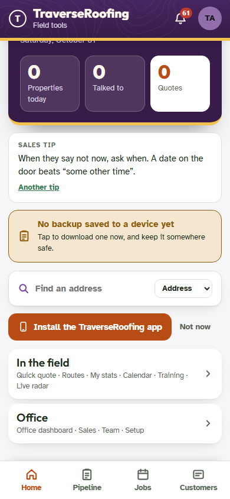
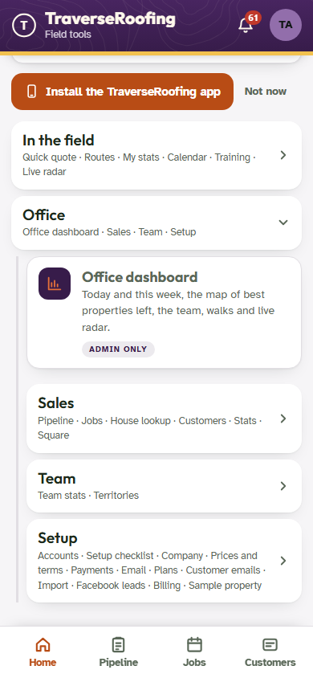
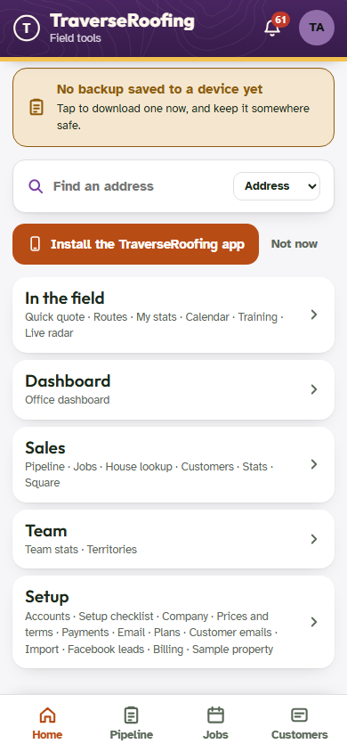
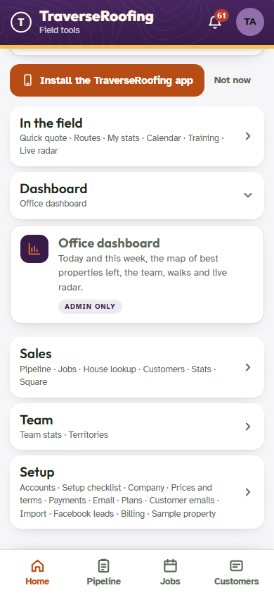
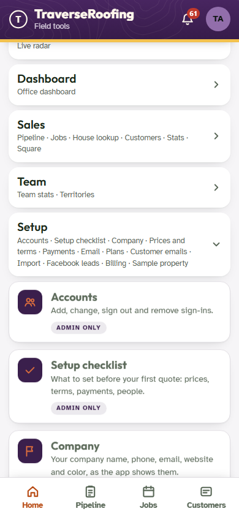
Tablet (820 x 1180), edition admin
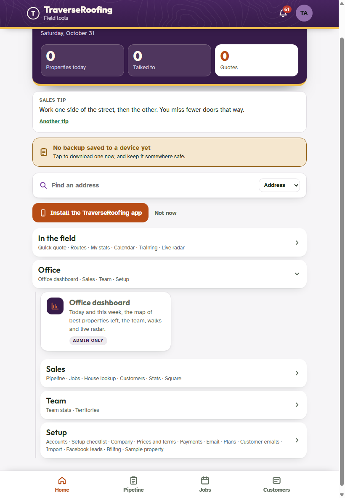
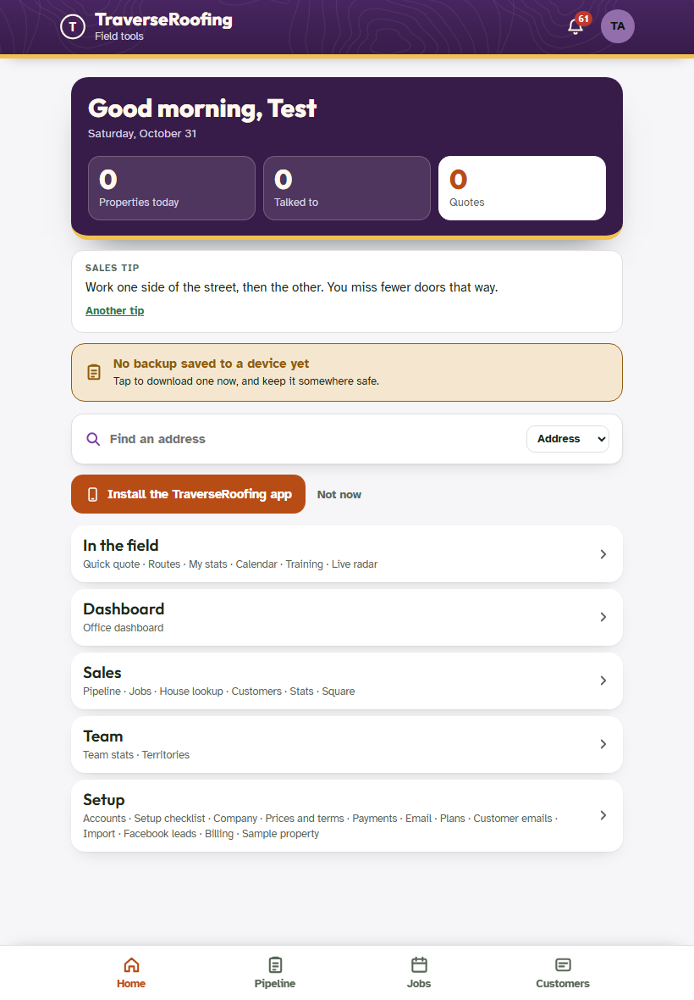
Sixfold admin
The Sixfold test copy's top bar shows the edition name left over from the earlier run in the same browser; the bars below are Sixfold's (See Jen's screen, Newsletter, Agreement terms).
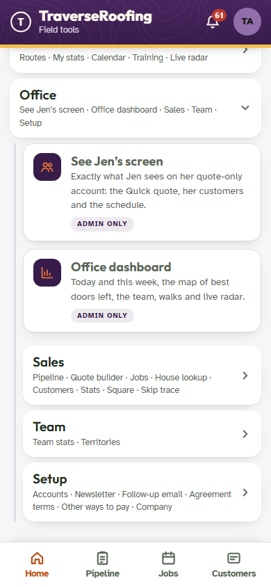
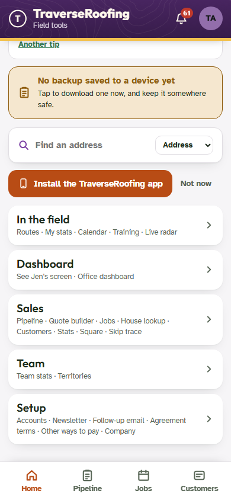
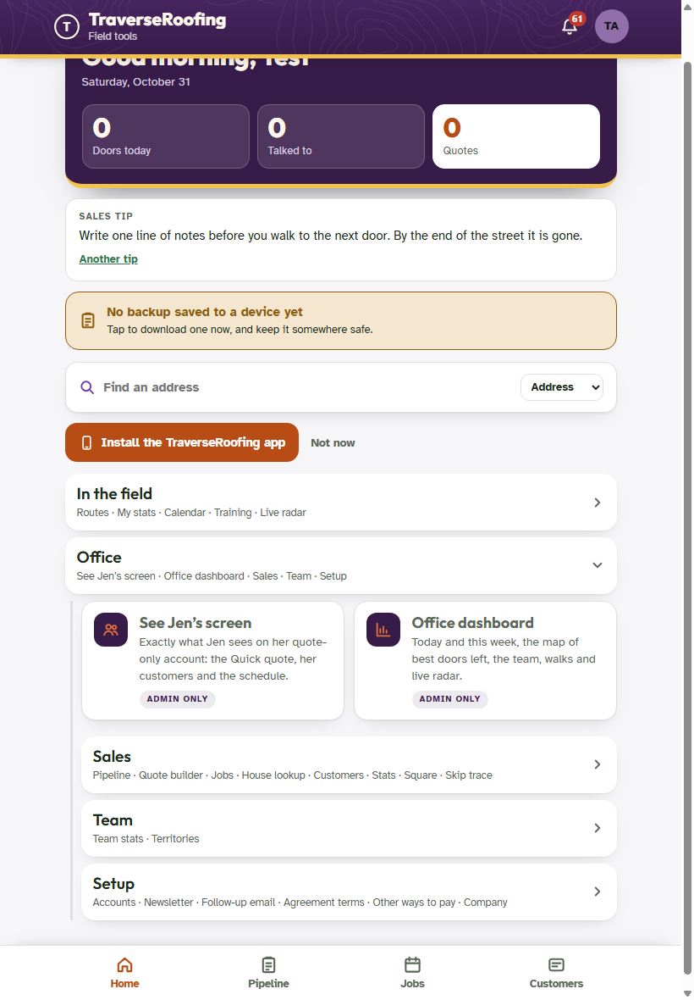
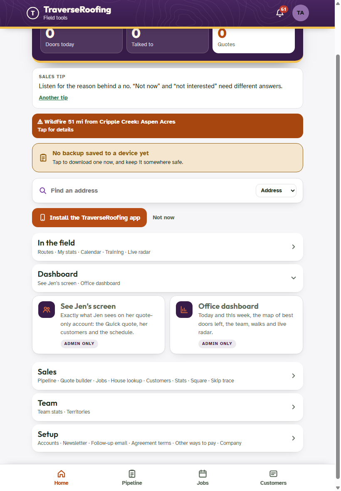
Traverse sign-in (super)
See through their eyes now sits in the Dashboard bar.
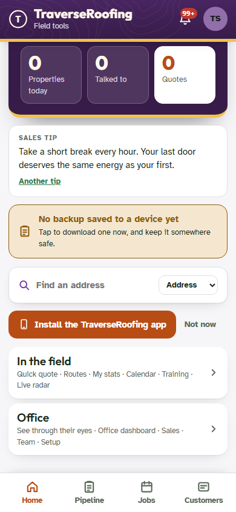
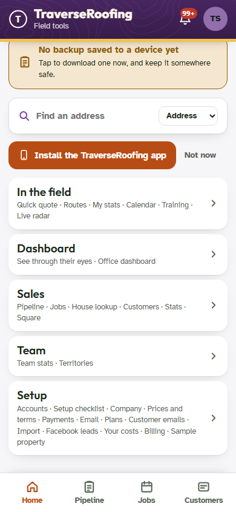
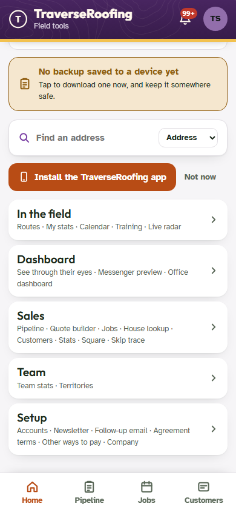
Office and manager: unchanged
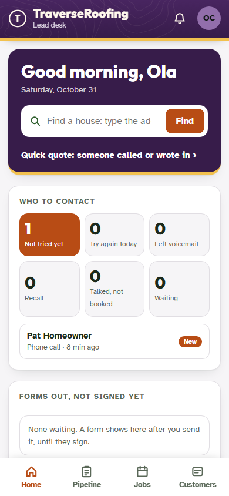
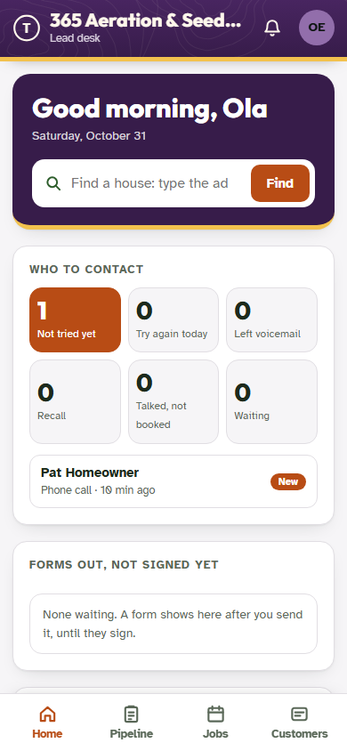
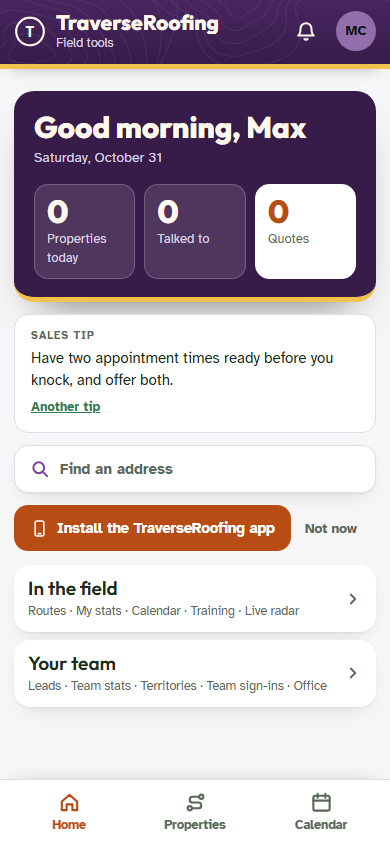
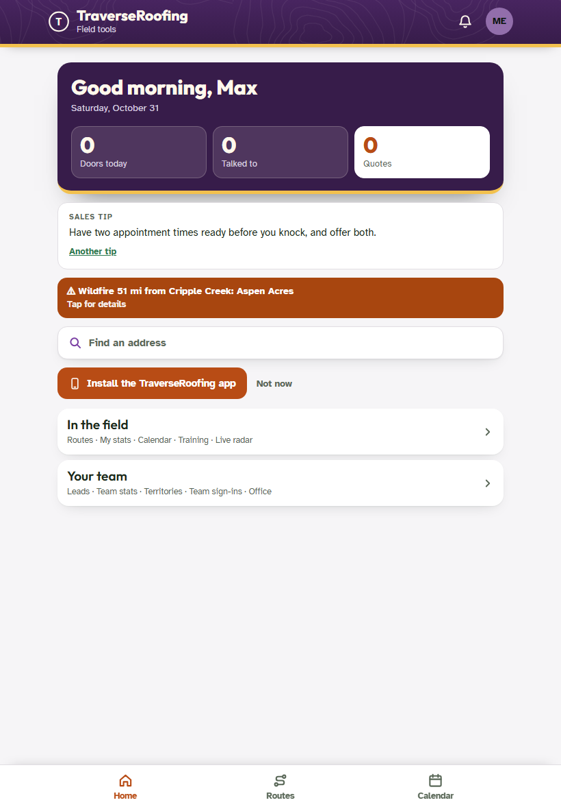
Tests (test copy, port 8820)
| Suite | Before | After |
|---|---|---|
| office-test (phone and tablet, edition and Sixfold, admin, super, office, manager) | 87 passed, 12 failed (the bars inside Office, and the old saved state) | 99 passed, 0 failed |
| reps | 37 / 0 | 37 / 0 |
| batch1029-ui | 43 / 0 | 43 / 0 |
| roles | 75 / 0 | 75 / 0 |
| t1030 | 63 / 1 | 63 / 1 (same failure both times: 11, the plan picker wording; not this change) |